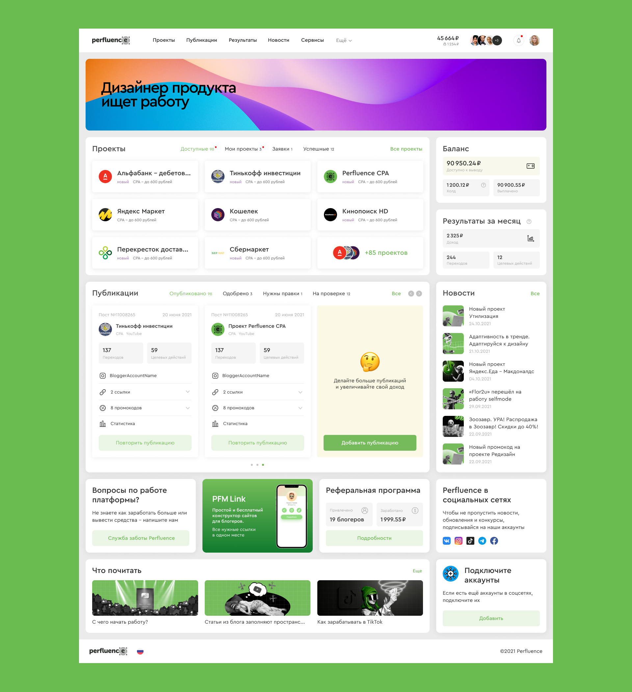

Половину года занимался переработкой интерфейсов главного продукта Перфлюенса. Личный кабинет блогера, бизнеса. Это очень сложная механика со множеством взаимодействий. Каждый этап переосмысливался и улучшался.
Перфлюенс очень молодая, а поэтому движушная компания. Решения принимаются молниеносно. Также быстро нужно предлагать результат. Это преимущество и недостаток.
Здесь я научился достигать результат максимально возможного качества в предельно короткий срок.
